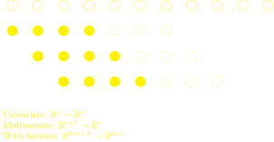

<!doctype html>
<html xmlns="http://www.w3.org/1999/html">
	<head>
		<meta charset="utf-8">
		<meta name="viewport" content="width=device-width, initial-scale=1.0, maximum-scale=1.0, user-scalable=no">

		<title>hbar</title>

		<link rel="stylesheet" href="../reveal/css/reveal.css">
		<link rel="stylesheet" href="../reveal/css/theme/blood.css">

		<!-- Theme used for syntax highlighting of code -->
		<link rel="stylesheet" href="../reveal/lib/css/zenburn.css">

		<!-- Printing and PDF exports -->
		<script>
			var link = document.createElement( 'link' );
			link.rel = 'stylesheet';
			link.type = 'text/css';
			link.href = window.location.search.match( /print-pdf/gi ) ? '../reveal/css/print/pdf.css' : '../reveal/css/print/paper.css';
			document.getElementsByTagName( 'head' )[0].appendChild( link );
		</script>
	</head>
	<body>
		<div class="reveal">
			<div class="slides">

                <section data-markdown data-separator="^\n---\n$" data-separator-vertical="^\n--\n$">
                    <script type="text/template">
						### Time Series Modeling with Neural Networks
						<font color="yellow">viktor.atalla@dataqube.de</font>

						---

						#### Agenda
						- Data
						- Neural Network Building Blocks
						- Some time series models

						---

						#### Data
						1. Aggregate data $(sku \cdot t, ~ features)$
							- Spark (Scala)
							- Hadoop cluster
							- <font color="yellow">2 Excursions</font>: Spark, feature engineering (ratios)
						2. Split into training, validation, and test data
						2. Generate training samples $(batch, ~ t, ~ features)$

						--

						#### Excursion: Spark `transform`
						<pre><code>def transform[U](t: Dataset[T] => Dataset[U]): Dataset[U]
						</code></pre>

						- Swallows a function $f: df \rightarrow df$
						- Include parameters via currying

						<pre><code>def f1(df: DataFrame): DataFrame = ???
def f2(param: String)(df: DataFrame): DataFrame = ???
...
</code></pre>


						<pre><code>df.transform(f1)
  .transform(f2(param))
  ....
  .transform(fn)
</code></pre>

						--

						#### Excursion: Ratios vs Probabilities
						
						* $N$: number of product orders,
						* $s$: number of returns
						* Suspicious "camel peaks" for $\text{Return ratio} = s/N$

						--

						`$$\begin{aligned} p(s\, | \, N, \theta) &= \operatorname{Binom}(s\, | \, N, \theta) \\
						 p(\theta) &= \operatorname{Beta}(\theta\, | \, a, b) \\
						\Rightarrow p(\theta\, | \, N, s) &= \operatorname{Beta}(\theta\, | \, a + s , b + N -s)  \end{aligned}$$`
						
						<font color="yellow"> Gelman et. al., Baysian Data Analysis, 2014</font>

						--

						#### Posterior (gedanken experiment)
						


						---

						#### Split data

						


						<font color="yellow" size="6"> Hyndman et. al., Forecasting: Principles and Practice, 2018</font>

						---

						#### Generate training samples
						

						---

						#### Evaluate model
						

						---

						### Neural Network Building Blocks
						...Coming from language models
						1. RNN
						2. LSTM
						3. Attention mechanism
						4. Self Attention
						5. Transformer

						---

						#### Recurrent Neural Network
						
						`$$\begin{aligned}
						h_t &= \gamma_h\left(W_{h_1} h_{t-1} + W_{h_2} x_t + b_h\right) \\
						y_t &= \gamma_y\left(W_y h_t + b_y\right) W_{h_1}
						\end{aligned}$$`

						--

						<font color="yellow">Pros</font>

						- Step $t$ depends *in principle* on all previous steps
						- Process input sequences of any length
						- Model size invariant w.r.t sequence size

						<font color="yellow">Cons</font>
						- Slow computation
						- Limited temporal memory
						- Exploding/vanishing gradient problem

						---

						#### Long-Short-Term Memory
						More complex recurrent unit by adding a cell state


						`$$\begin{aligned}
						\textit{Input gate}& \quad i_t = \sigma \left(
						W_{i_1} h_{t-1} + W_{i_2} x_{t} + b_i
						\right)\\
						\textit{Output gate}& \quad o_t = \sigma \left(
						W_{o_1} h_{t-1} + W_{o_2} x_{t} + b_o
						\right)\\
						\textit{Forget gate}& \quad  f_t = \sigma \left(
						W_{f_1} h_{t-1} + W_{f_2} x_{t} + b_f
						\right)\\
						\textit{Cell state}& \quad  c_t =
						f_t \odot c_{t-1} \\
						& \quad ~~~  + i_t \odot \left (W_{c_1} h_{t-1} + W_{c_2} x_t + b_c  \right) \\
						\textit{Hidden state}& \quad  h_t =
						o_t \odot \tanh(c_{t}),
						\end{aligned}$$`

						---

						#### Excursion Seq-to-Seq Models in NLP
						
						- Static representation $c$ = last hidden encoder state
						- Decoder: additional softmax output layer
						- Training: minimize cross entropy


						---

						#### Attention mechanism
						
						<font color="yellow">arXiv:1508.04025</font>

						--

						#### Attention mechanism
						- (Dynamic) context vectors
						`$$\begin{aligned}
						c_t &= \sum_\tau  \lambda (d_t, e_\tau)\, e_\tau
						\end{aligned}$$`
						- Linear combination of (past) encoder hidden states
						- Several choices, e.g.
						`$$\begin{aligned}
						 \lambda (d_t, e_\tau) = \operatorname{softmax}(e_\tau^T d_t)
						\end{aligned}$$`
						- Concat + trafo
						`$$\begin{aligned}
						h_t & = \gamma W \left(c_t \oplus d_t \right)
						\end{aligned}$$`

						---

						#### Self-Attention
						
						- So far only *past* attention $\rightarrow$ allow *future* states
						- Additional contribution from same point in time
						- Throws away causality!

						--

						#### Scaled dot-product attention
						`$$\begin{aligned}
						c_t = \sum_\tau  \lambda (x_t, x_\tau)\, x_\tau
						\rightarrow c_t = \sum_\tau  \lambda \left(f_1(x_t), \, f_2(x_\tau)\right)\, f_3(x_\tau)
						\end{aligned} $$`
						`$$\begin{aligned}
						\textit{Query}& \quad q_t :=f_1(x_t) = W_q x_t, ~~ W_q \in \mathbb{R}^{d_s \times d_x} \\
						\textit{Key}& \quad k_\tau := f_2(x_\tau) =  W_k x_\tau, ~~  W_q \in \mathbb{R}^{d_s \times d_x} \\
						\textit{Value}& \quad v_\tau := f_3(x_\tau) =  W_v x_\tau, ~~ W_q \in \mathbb{R}^{d_h \times d_x},
						\end{aligned} $$`
						- Introduce trainable functions $f_1, f_2, f_3$ parametrized by matrices $W_q, W_k, W_v$
						- <font color="yellow">Vaswani et.al., Attention Is All You Need, 2017</font>

						--

						#### Scaled dot-product attention
						`$$\begin{aligned}
						c_t &= \sum_\tau  \lambda \left(f_1(x_t), \, f_2(x_\tau)\right)\, f_3(x_\tau) \\
						    &= \sum_\tau \operatorname{softmax}\left( \frac{q_\tau^T  k_i}{\sqrt{d_s}}\right)\, v_\tau
						\end{aligned} $$`
						`$$\begin{aligned}
						\textit{Query}& \quad q_t :=f_1(x_t) = W_q x_t, ~~ W_q \in \mathbb{R}^{d_s \times d_x} \\
						\textit{Key}& \quad k_\tau := f_2(x_\tau) =  W_k x_\tau, ~~  W_q \in \mathbb{R}^{d_s \times d_x} \\
						\textit{Value}& \quad v_\tau := f_3(x_\tau) =  W_v x_\tau, ~~ W_q \in \mathbb{R}^{d_h \times d_x},
						\end{aligned} $$`

						--

						#### Vectorized version
						`$$\begin{aligned}
						X &:=[x_1,\dots, x_T] \in \mathbb{R}^{d_x\times T}\\
						Q &:= W_q X \in \mathbb{R} ^ {d_s \times T}, \\
						K &:= W_k X \in \mathbb{R} ^ {d_s \times T},\\
						V &:= W_vX\in \mathbb{R} ^ {d_h \times T},\\
						C &=:\mathcal A (Q, K, V)  = V  \,  \operatorname{softmax}\left(\frac{Q^T K}{\sqrt d_s} \right).
						\end{aligned}$$`
						- Orginial version = dual (transposed) formulation
						- Learn weights $W_q, W_k, W_v$ via back propagtion

						--

						#### Almost there
						- <font color="yellow">Causal (masked) Attention</font>
						`$$\begin{aligned}
						\mathcal A (Q, K, V)  =  \text{softmax}\left(\frac{Q K^T}{\sqrt d_s} + M\right) V,
						\end{aligned}$$`
						$M = -\infty$ in the upper triangular and 0 elsewhere
						- <font color="yellow">Multihead attention</font>
						- Compute (causal) attention $H$ times in parallel
						`$$\begin{aligned}
						C= \oplus_{h=1}^H \mathcal A(Q_h, K_h, V_h) W
						\end{aligned}$$`

						---

						#### Transformer = no more LSTM
						
						<font color="yellow" size="5">Vaswani et.al., Attention Is All You Need, 2017</font>


						---

						#### Wrap up
						- RNN (canonical sequence modelling)
						- LSTM
						- LSTM + attention
						- Transformer (just attention)

						---

						### Some time series models

						---

						#### Deep-Ar
						
						- <font color="yellow">arXiv:1704.04110</font>
						- Idea: Learn parameters of likelihood function
						- Training: minimize log-likelihood
						- Prediction: Sample trace from likelihood function

						---

						#### Temporal Fusion Transformer
						
						<font color="yellow" size="6">arXiv:1912.09363</font>

						---

						#### Transformer architecture for time series
						
						- Overcome locality agnostics
						- Convolutional self-attention
						- <font color="yellow">arXiv:1907.00235</font>

						---

						### <font color="yellow">Thank you!</font>
						- Look at some Tensorflow code snippets
						- [Bayesian probabilites](https://8gradplus.github.io/Talks/)

                    </script>
                </section>


			</div>
		</div>

		<script src="../reveal/lib/js/head.min.js"></script>
		<script src="../reveal/js/reveal.js"></script>

		<script>
			// More info https://github.com/hakimel/reveal.js#configuration
			Reveal.initialize({
				history: true,

				math: {
		            mathjax: 'https://cdn.mathjax.org/mathjax/latest/MathJax.js',
		            config: 'TeX-AMS_HTML-full'  // See http://docs.mathjax.org/en/latest/config-files.html
	            },

				// More info https://github.com/hakimel/reveal.js#dependencies
				dependencies: [
					{ src: '../reveal/plugin/markdown/marked.js' },
					{ src: '../reveal/plugin/markdown/markdown.js' },
					{ src: '../reveal/plugin/notes/notes.js', async: true },
					{ src: '../reveal/plugin/highlight/highlight.js', async: true, callback: function() { hljs.initHighlightingOnLoad(); } },
					{ src: '../reveal/plugin/math/math.js', async: true }
				]
			});
		</script>
	</body>
</html>
